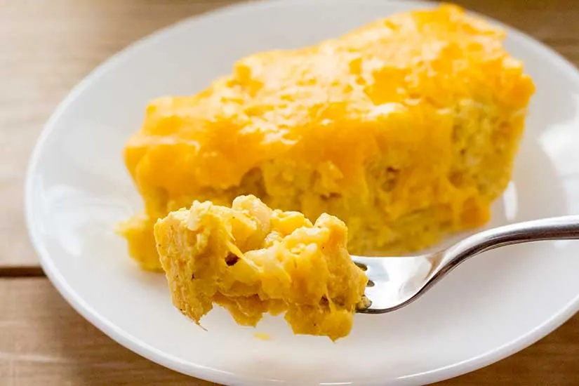

Mac & Cheese Dish
Let’s get started!
What is Mac & Cheese?
Mac & Cheese is a dish of cooked macaroni pasta and a cheese sauce, most commonly cheddar. It can also incorporate other ingredients, such as breadcrumbs, meat and vegetables.
What ingredients are needed for Mac & Cheese?
- Elbow Noodles
- Evaporated Milk
- Shredded Cheese
- Egg
- Butter
How to Make the Best Mac & Cheese:
- Combine evaporated milk, cheese, butter and seasoning in a sauce pan and bring to a boil
- Cook Elbow Noodles until they are al dente.
- Pour water out and put noodles into a baking dish. Pour the sauce mixture that was created in step one into the baking dish.
- Season the mixture of noodles, sauce to your liking. Add one egg and mix very well
- Top with shredded cheese and bake on 325%